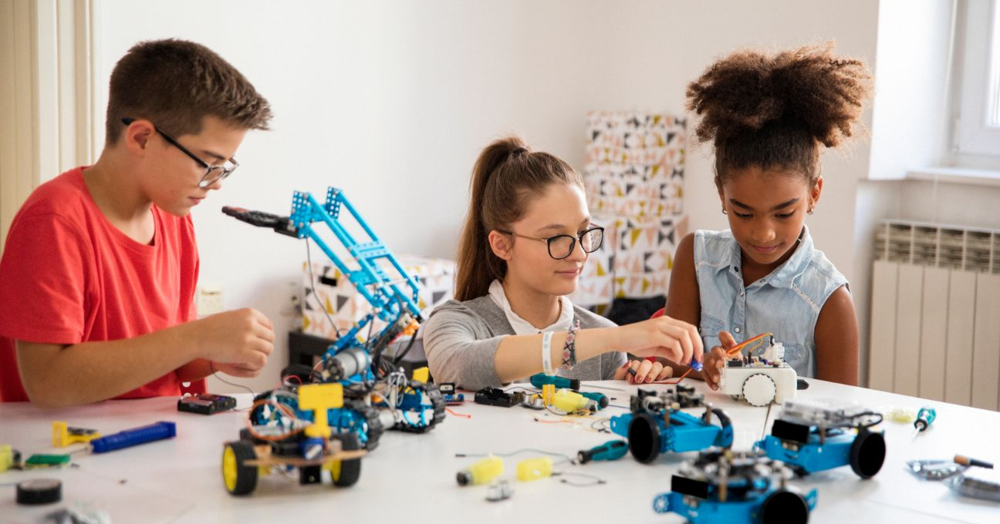

Robótica en la Medicina

La robótica médica ha revolucionado la atención sanitaria. Los robots quirúrgicos permiten a los médicos realizar operaciones de alta precisión, minimizando los riesgos y el tiempo de recuperación del paciente. Además, existen robots que ayudan en la rehabilitación física, robots asistentes para personas con movilidad reducida y sistemas automatizados para la entrega de medicamentos en hospitales. Esta tecnología mejora tanto la calidad del tratamiento como la eficiencia hospitalaria.
Robótica en la Industria
La industria moderna depende en gran medida de los robots para automatizar procesos repetitivos y peligrosos. Se utilizan en líneas de ensamblaje, inspección de calidad, soldadura y embalaje. Estos robots operan de forma continua sin fatiga, lo que incrementa la productividad y reduce errores. Gracias a la robótica, muchas empresas pueden producir más rápido, con menos costos y mayor seguridad para los trabajadores humanos.
Robótica en el Hogar
Los robots domésticos se han convertido en aliados útiles para las tareas diarias. Desde aspiradoras inteligentes que limpian de forma autónoma, hasta asistentes virtuales que controlan electrodomésticos mediante comandos de voz. Estos dispositivos hacen que el hogar sea más cómodo y eficiente, ahorrando tiempo en labores rutinarias. Algunos incluso monitorean la seguridad del hogar o ayudan a personas mayores en su día a día.
Robótica en la Exploración Espacial
La robótica ha permitido a los humanos explorar lugares donde sería imposible llegar físicamente. En el espacio, los rovers como el Perseverance de la NASA han explorado Marte, recogido datos y enviado imágenes en tiempo real. También se utilizan brazos robóticos en estaciones espaciales para mantenimiento y experimentación. La robótica espacial continúa abriendo fronteras en la investigación del universo.
Robótica en la Educación
En el ámbito educativo, la robótica se utiliza para enseñar conceptos de ciencia, tecnología, ingeniería y matemáticas (STEM). Los kits de robótica permiten a los estudiantes aprender programación, resolución de problemas y trabajo en equipo. También despiertan el interés por carreras tecnológicas desde temprana edad, preparando a los jóvenes para un mundo cada vez más automatizado.